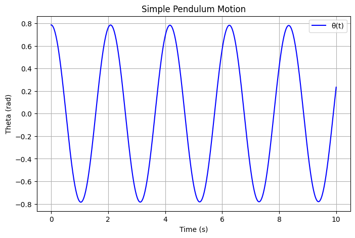
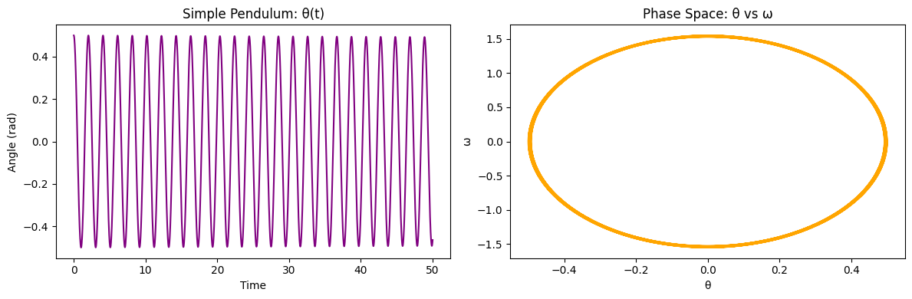
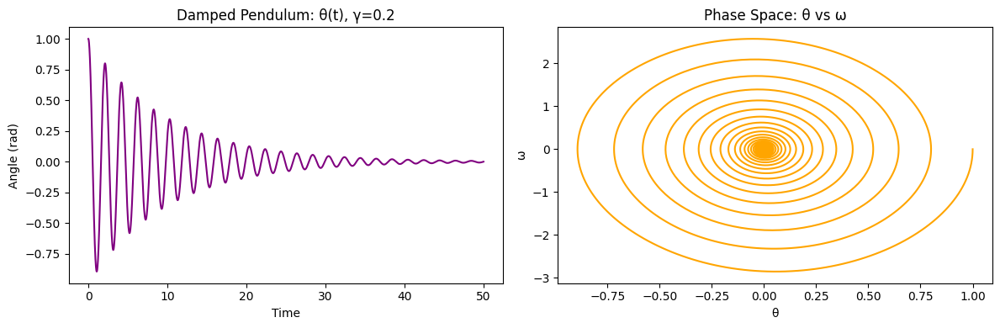
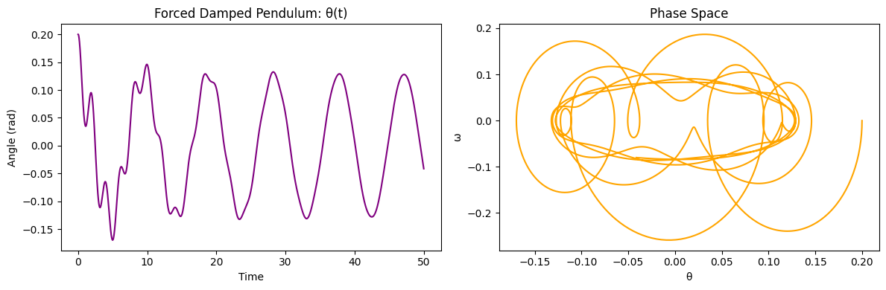
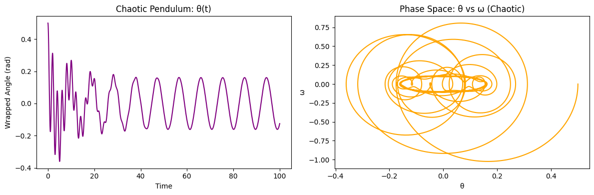

Problem 2:
### Investigating the Dynamics of a Forced Damped Pendulum
The forced damped pendulum is a classical nonlinear system governed by the interplay of restoring forces (gravity), damping (resistance), and external periodic driving. Its rich dynamics include:
- Simple harmonic motion
- Resonance
- Chaos
- Quasiperiodicity
This system serves as a model for: - Oscillating circuits (RLC) - Mechanical vibration systems - Energy harvesting devices - Climate and biological rhythms

Theoretical Background
Governing Differential Equation
The general form is:
Where:
- \(\theta(t)\): angular displacement
- \(b\): damping coefficient
- \(\frac{g}{L}\): restoring term (natural frequency squared)
- \(A\): amplitude of driving force
- \(\omega\): angular frequency of the external drive
Small-Angle Approximation
When \(\theta \ll 1\), we can approximate:
Resulting in a linearized version:
Useful Definitions
- Natural Frequency: $$ \omega_0 = \sqrt{\frac{g}{L}} $$
- Damping Ratio: $$ \zeta = \frac{b}{2\sqrt{g/L}} $$ Resonance: occurs when \(\omega \approx \omega_0\), which leads to large amplitude oscillations.
Example (Small-Angle, Linear Case)
Given:
- \(L = 1 \, \text{m}, \quad g = 9.8 \, \text{m/s}^2\)
- \(b = 0.5, \quad A = 1.2, \quad \omega = 2.0\)
- Initial Conditions: \(\theta(0) = 0.2 \, \text{rad}, \quad \dot{\theta}(0) = 0\)
The simplified equation becomes:
This has no analytical closed-form solution in the general case, so we proceed to solve it numerically.
Python Simulation (Visualize in Colab)
SIMPLE PENDULUM

DAMPED PENDULUM

FORCED PENDULUM (No Damping)

FORCED DAMPED PENDULUM

CHAOTIC / RESONANT PENDULUM
